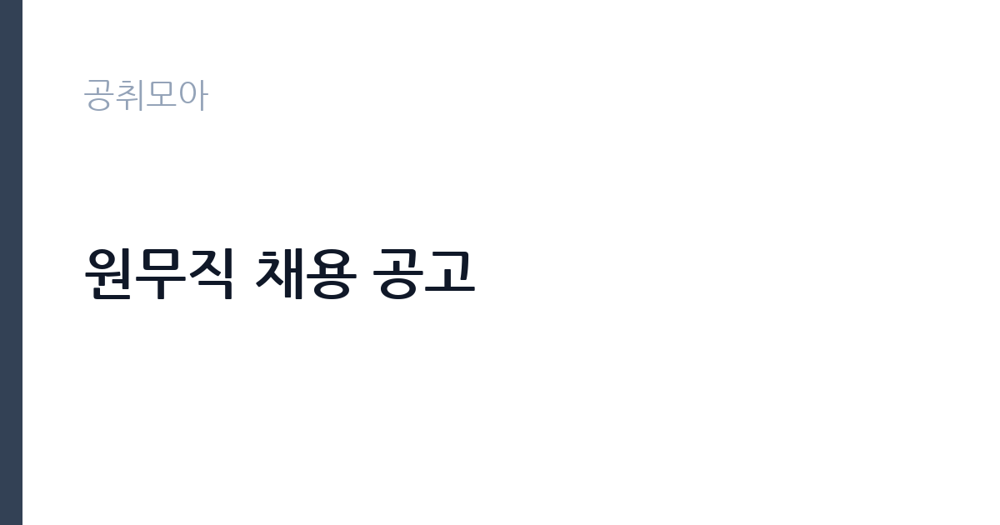

[공공기관] 원무직 채용 공고
경상국립대학교병원 · 경남 · 마감 2026-11-04 (D-6) · 출처 잡알리오

한눈에 보는 모집 조건
| 기관 | 경상국립대학교병원 |
|---|---|
| 공고명 | 원무직 채용 공고 |
| 고용형태 | 정규직 |
| 근무지 | 경남 |
| 게시일 | 2026-10-29 |
| 마감일 | 2026-11-04 (D-6) |
지원자격, 이렇게 읽으세요
- 모집분야별 응시자격에 따름(자세한 사항은 첨부파일의 채용공고문을 참조)
정규직 채용은 기간의 정함이 없는 근로계약을 전제로 합니다. 수습 기간을 두고 평가한 뒤 정규직으로 확정하는 절차가 일반적이며 기관의 인사 규정과 임금 체계를 적용받습니다. 이번 공고는 경상국립대학교병원이 직접 진행하는 자체 전형입니다. 원무직은 병원 행정 경력과 보험 청구 관련 지식을 우대합니다. 의료보험·건강보험 관련 자격이나 병원 원무 경력이 있으면 유리하고, 전산(OCS·EMR) 사용 경험이 실무에 바로 쓰입니다. 채용 형태에 따라 정규직과 계약직이 나뉘므로 공고문의 고용형태 항목을 먼저 확인해야 합니다. 병원 특성상 교대·당직 근무가 포함될 수 있어 근무표 수용 여부가 실질적인 조건입니다. 우대 사항은 증빙이 없으면 반영되지 않으므로 해당 여부를 먼저 확인해야 합니다. 자격 취득 예정자는 채용 공고의 예정자 허용 조항을 먼저 확인해야 합니다. 조항이 없으면 지원 자체가 반려될 수 있습니다. 우대 사항에 해당하면 증빙을 반드시 첨부해야 하며, 누락하면 가점 없이 평가됩니다.
이 공고의 포인트
이 건은 경상국립대학교병원이 같은 시기에 낸 5개 모집분야 가운데 원무·수납 직무입니다. 다른 직무 공고와 요건이 다르므로 지원 전에 모집분야 표를 대조해야 합니다. 이 공고의 첫 번째 포인트는 고용 형태입니다. 수습 기간 평가를 통과하면 기간의 정함이 없는 신분이 되어 고용이 안정됩니다. 두 번째는 업무 범위가 명확하다는 점입니다. 원무·수납 직무로 채용되므로 배치 이후 담당 업무가 크게 흔들리지 않습니다. 세 번째는 근무지입니다. 경남 지역 근무로 수도권 공고에 비해 지원자 분포가 넓지 않아 상대적으로 경쟁이 분산되는 경우가 있습니다. 근무 조건이 공고문에 구체적으로 적혀 있어 지원 전에 판단할 정보가 충분합니다. 선발 인원은 공고문에 명시되어 있으니 모집분야 항목을 함께 확인하십시오.
전형은 어떻게 진행되나
서류전형과 면접전형 외에 직무수행능력 평가가 붙는 경우가 있습니다. 평가 방식은 공고문에 구체적으로 적혀 있으므로 어떤 항목에 배점이 높은지 먼저 파악하십시오. 면접에서는 지원 동기보다 실제 업무 경험에 대한 질문이 많고, 답변의 구체성이 평가를 가릅니다. 전형 일정은 서류 마감 이후 빠르게 진행되므로 연락 가능한 번호를 정확히 기재하고 문자와 메일을 수시로 확인해야 합니다. 최종 단계에서는 결격사유 조회와 신체검사가 진행됩니다. 제출서류 원본은 최종 단계에서 다시 요구되는 경우가 있어 사본과 함께 보관하십시오.
원문에서 확인한 전형 방식
1. 입사지원서 접수 마감일 현재 만 18세 이상이면서 60세 미만인 자 2. 남자인 경우, 입사지원서 접수 마감일 현재 병역을 마쳤거나 면제된 자 3. 모집분야별 응시자격에 따름(자세한 사항은 첨부파일의 채용공고문을 참조) 4. 본원 인사규정 제24조(결격사유)에 해당되지 않는 자
이런 분께 추천해요
- 병원 원무·수납 경력이 있는 분
- 건강보험 청구·정산 업무를 이해하는 분
- 교대 근무와 창구 민원 응대가 가능한 분
지원 전 체크리스트
- 응시자격 요건과 경력 기준을 충족하는가 — 경력은 증명서로 입증해야 합니다
- 수습 기간과 정규직 전환 조건을 확인했는가
- 제출서류 목록을 모두 준비했는가 — 누락 시 서류 단계에서 탈락합니다
- 접수 마감 2026-11-04 이전에 접수 방식을 확인해 제출했는가
모집 일정과 제출 타이밍
2026-10-29에 공고가 올라왔고 접수는 2026-11-04까지입니다. 남은 기간은 6일이며, 이 기간에 자격증 사본과 경력증명서, 주민등록등본 같은 기본 서류를 모두 준비해야 합니다. 경력증명서는 발급에 며칠이 걸리는 경우가 있으니 가장 먼저 신청하십시오. 접수는 온라인과 우편·방문으로 나뉘는 경우가 많고, 우편 접수는 도착 기준으로 판정되므로 마감일 소인만 믿으면 안 됩니다. 면접 일정은 서류 발표 후 개별 통보되므로 제출 후에도 연락을 받을 수 있도록 유지해야 합니다. 마감 이후에는 어떤 사유로도 접수가 인정되지 않으므로 하루 전 제출을 목표로 하십시오.
직무 이해하기: 공공기관
국립병원은 정신건강·결핵·재활 등 공공 의료를 담당하는 국가 기관입니다. 진료와 함께 입원 환자 보호, 지역 사회 연계 사업을 운영하며, 공무직 인력은 시설 관리와 급식, 경비 같은 지원 업무를 맡습니다. 보안과 개인정보 보호 요건이 일반 시설보다 엄격합니다. 원무 업무는 병원을 찾은 환자의 접수와 수납, 진료비 정산을 담당합니다. 외래·응급 접수 창구에서 환자 정보를 확인하고 진료과를 배정하며, 진료 후 본인부담금을 계산해 수납합니다. 보험 적용 여부와 산정특례, 의료급여 같은 제도를 확인해 청구 오류를 줄이는 일이 핵심입니다. 입퇴원 수속과 중간 정산, 제증명 발급도 원무의 업무입니다. 창구 대기와 민원이 동시에 몰려 정확성과 속도를 함께 요구받습니다. 실무는 선임자와 짝을 이뤄 익히는 방식이 일반적이라 첫 달은 교육과 현장 적응에 쓰입니다. 현장 업무와 사무 업무의 비중은 기관의 사업 일정에 따라 계절별로 달라집니다. 원문에 '모집분야별 응시자격에 따름(자세한 사항은 첨부파일의 채용공고문을 참조)'라는 조건이 명시되어 있습니다.
자기소개서 작성 팁
지원서는 원무·수납 경험을 업무 단위로 정리하는 것이 효과적입니다. 하루 처리 건수, 수납 오류를 줄인 방식, 민원을 해결한 사례를 수치와 함께 쓰십시오. 보험 청구나 산정특례 업무를 다뤄본 경험이 있다면 가장 앞에 배치하십시오. 환자를 대면하는 직무이므로 응대 태도를 보여주는 사례가 필요합니다. 직무 경험이 많지 않다면 경험의 양보다 과정을 구체적으로 쓰는 편이 낫습니다. 어떤 상황에서 무엇을 판단했고 어떤 결과가 나왔는지 순서대로 서술하면 신뢰가 생깁니다. 지원 동기와 기여 방안은 한 문단씩 짧게 유지하고, 가장 자신 있는 경험에 분량을 몰아주십시오. 마지막 문장은 포부보다 구체적인 실행 계획으로 끝내는 것이 좋습니다.
면접 준비 포인트
면접에서는 정확성과 민원 대응을 확인합니다. 수납 금액이 맞지 않는다는 항의를 받으면 어떤 순서로 확인할지, 보험 적용이 안 되는 treatment를 설명해야 할 때 어떻게 안내할지 묻습니다. 개인정보와 진료 정보를 다루는 직무이므로 보안 의식을 언급해야 합니다. 병원 전산 시스템 사용 경험을 구체적으로 답하십시오. 모르는 질문에 추측으로 답하면 감점 요인이 되므로, 확인 후 답하겠다고 밝히는 편이 안전합니다. 면접은 공고문에 적힌 직무 내용을 얼마나 이해하고 있는지 확인하는 질문으로 시작하는 경우가 많으니, 모집분야 문구를 그대로 읽어 두는 것이 도움이 됩니다.
급여·근무조건 읽는 법
알리오(공공기관 경영정보 공개시스템) 2025년 결산 경영공시 기준으로 경상국립대학교병원 일반정규직 1인당 평균보수액은 6,912만원, 공시된 신입사원 초임은 4,068만원입니다. 평균보수액은 기본급에 고정수당·실적수당·성과상여금·급여성 복리후생비를 모두 합산한 값이라 월 기본급만 보고 판단하면 실제와 크게 어긋납니다. 정규직 신입의 경우 공시된 신입사원 초임이 출발점이 되고, 이후 호봉과 성과급에 따라 평균보수에 접근합니다. 국립대학병원 원무직의 보수는 병원 인사규정의 직급별 임금표를 따르며, 기본급에 각종 수당과 교대·당직 수당이 더해집니다. 신규 채용이면 공시된 신입 초임이 출발점이 되고, 경력 인정 여부에 따라 초임 호봉이 달라집니다. 정확한 금액과 수당 항목은 공고문 처우 항목에서 확인하십시오. 2026년 적용 최저임금은 시급 10,320원, 월 환산 2,156,880원(주 40시간·209시간 기준)입니다. 고용노동부 고시 제2025-47호로 확정된 금액입니다. 공고문에 금액이 제시되지 않은 항목은 원문 보수표나 처우 설명에서 확인해야 하며 확인되지 않은 수치는 쓰지 않는 것이 원칙입니다. 비교할 때는 월 급여뿐 아니라 상여·명절휴가비·복지포인트·초과근무수당까지 포함한 연간 총액으로 계산하십시오. 기간제라면 계약 기간 동안의 총액을, 무기계약이라면 호봉 상승과 정년까지의 누적 소득을 기준으로 판단하는 편이 정확합니다.
자주 묻는 질문
- 선발 인원은 몇 명인가요?
공고문의 모집분야 항목에 직종별 인원이 표로 제시되어 있습니다. 첨부된 공고문 원문에서 확인하십시오. - 근무지는 어디인가요?
경남 지역의 경상국립대학교병원 소속 근무지입니다. 세부 주소와 출퇴근 조건은 원문 공고문에서 확인할 수 있습니다. - 보수는 얼마인가요?
채용 신분(정규직)과 기관 임금 규정에 따라 정해지며 구체적인 금액은 공고문 처우 항목에 제시됩니다. 금액이 공개되지 않은 경우에는 원문의 보수표를 확인하십시오.
함께 보면 좋은 공고
[공공기관] 2026년 (재)한국에너지재단 제2차 기간제 채용 공고(채용 제2026-06호) — 마감 2026-11-13[공공기관] 한국고전번역원 2026년 4분기 제2차 직원 신규 채용 — 마감 2026-11-05[공공기관] 계약직 연구원/행정(전북응급의료지원센터) 채용 재공고 — 마감 2026-11-09출처: 잡알리오 공개정보를 바탕으로 공취모아가 정리한 안내글입니다. 모집 조건·일정은 변경될 수 있으니 지원 전 반드시 원문 공고문을 확인하세요. 본 글은 정보 제공용이며 합격을 보장하지 않습니다.